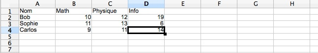

TP3 : Lecture dans un fichiers et statistiques¶
Note
Les objectifs du TP :
Apprendre à lire et à écrire dans un fichier txt ou csv.
Faire des statistiques sur les données lues.
Représenter graphiquement ces données.
Lire et écrire dans un fichier texte¶
Lire un fichier texte¶
Note
Du point de vue du programme qui va s’en servir, un fichier texte fait parti de ce que l’on peut appeler une ressource. Or, les ressources sont limitées, et d’une manière ou d’une autre, l’accès à ces ressources doit être partagé entre les différents programmes qui peuvent en avoir besoin.
Concrètement, cela veut dire qu’il est nécessaire d’acquérir cette ressource avant de s’en servir, puis de la libérer après usage. Pour un fichier, cela se fait en l’ouvrant – puis en le fermant:
>>> fichier = open("essai.txt", "r") # On ouvre le fichier >>> # On utilise le fichier >>> fichier.close() # On ferme le fichier
- Le second argument de la fonction
openest le mode dans lequel vous souhaitez ouvrir le fichier, il en existe trois :
r: pour read, c’est le mode de lecture.
w: pour write, c’est le mode d’écriture mais là il faut faire très attention car si le fichier existe il sera écrasé.
a: pour append, c’est le mode d’ajout à la fin d’un fichier.On peut lire tout le contenu d’un fichier texte grâce à la méthode
read:>>> fichier = open("essai.txt", "r") >>> chaine = fichier.read() >>> print("Le fichier contient :\n" +chaine) >>> fichier.close()
Avec cette méthode il est impératif de refermer le fichier, une fois que l’on a finit de travailler avec. Pour ne pas avoir à s’en soucier on peut aussi utiliser un gestionnaire de contexte avec le mot clef with :
>>> with open("mon_fichier.txt","r") as scr:
# Travail sur le fichier
Exercice 1 : Ouvrez le fichier et afficher tout le contenu de BigBangTheoryS06E22.txt. Il s’agit du scipt de l’épisode 22 de la saison 6 de la série the Big-Bang Theory (l’un des meilleurs). Vous trouverez le fichier ici
Note
Python offre plusieurs possibilités pour lire les lignes d’un fichier :
La méthode
readlines, qui lit toutes les lignes du fichiers, et les range dans une séquence.La méthode
readline, qui lit le fichier ligne par ligne.L’objet fichier est un itérable, donc on peut le parcourir :
>>> for ligne in fichier.
Les lignes d’un fichier texte se finissent par un retour chariot \n. Il est souvent utile de s’en débarrasser, pour cela on peut utiliser la méthode replace('a','b') qui remplace le caractère a par le caractère b. Mais, depuis Python 2.2 il est recommandé d’utiliser la méthode rstrip('\n\r') pour les faire disparaître.
Exercice 2 : Ecrire un script qui compte le nombre de lignes du fichier BigBangTheoryS06E22.txt. Combien de fois le nom du docteur Proton est-il mentionné pendant cette épisode ?
Exercice 3 : Ecrire un script qui compte le nombre de répliques de chaque personnage. Il y en a sept : Sheldon, Leonard, Howard, Raj, Penny, Bernadette et Arthur. Vous utiliserez un dictionnaire characters dont les clefs sont les noms des personnages pour stocker les résultats.
Solution
with open("BigBangTheoryS06E22.txt","r") as data: characters = {'Sheldon': 0, 'Leonard': 0, 'Howard': 0, 'Raj': 0, 'Penny': 0, 'Bernadette': 0, 'Arthur': 0} for ligne in data.readlines(): for key in characters: if ligne[:len(key)] == key: characters[key] += 1
A l’aide du code suivant représenter les données du dictionnaire characters sous forme d’un histogramme. Vous trouverez toutes les informations ici.
import matplotlib.pyplot as plt fig, ax = plt.subplots() # Création de la liste des clefs char = list(characters.keys()) # Création de la liste des nombres de dialogues nb_diag = [characters[k] for k in characters] # Nommage des axes ax.set_ylabel('Nombre de répliques') ax.set_xlabel('Personnages') # Création du titre de la figure ax.set_title('Répartition des lignes de dialogues') # Création de l'histogramme ax.bar(char, nb_diag) plt.show()
Exercice 4 : Ecrire un script qui compte le nombre de mots prononcés par chacun des personnages. Vous pourrez utiliser la méthode replace pour éliminer les charactères \n, pour transformer les apostrophes en espaces, et la méthode split, avec une espace comme séparateur, pour obtenir la liste des mots d’une chaîne de charactères. Stocker les résultats dans un dictionnaire dialogues.
Solution
with open("BigBangTheoryS06E22.txt","r") as data: dialogues = {'Sheldon': 0, 'Leonard': 0, 'Howard': 0, 'Raj': 0, 'Penny': 0, 'Bernadette': 0, 'Arthur': 0} for ligne in data.readlines(): for key in dialogues: if ligne[:len(key)] == key: dialogues[key] += len(ligne.replace("\n","").replace("’"," ").split(" "))
A l’aide du code suivant représenter les données du dictionnaire dialogues sous forme d’un diagramme circulaire. Vous trouverez toutes les informations ici.
import matplotlib.pyplot as plt # Création de la liste des clefs char = list(characters.keys()) # Création de la liste des nombres de dialogues nb_mot = [dialogues[k] for k in dialogues] explode = (0.1, 0, 0, 0,0, 0,0) fig1, ax1 = plt.subplots() ax1.pie(nb_mot, explode=explode, labels=char, autopct='%1.1f%%', shadow=True, startangle=90) ax1.axis('equal') ax1.legend(title='Répartition du nombre de mots') plt.show()
Exercice 5 : Ecrire un script qui compte le nombre de questions posées par chaque personnages durant cette épisode, et représenter la répartition par un diagramme circulaire.
Exercice 6 : Ecrire une fonction freq(sch : str)->list. Qui calcule la fréquence d’apparition du schéma sch parmi les décimales de \(\pi\) allant de \(10^3\) à \(10^7\) en avancant par pas de \(100\).
Afficher sur un même graphique les fréquences d’apparition de \(0\). Ces fréquences semblent-elles converger ? Si oui vers quoi ?
Faire de même avec \(089\), \(666\). Ces fréquences semblent-elles converger ? Si oui vers quoi ?
Pouvez-vous conjecturer vers quoi converge la fréqence d’apparition d’un schéma en fonction de sa longueur ?
Vous trouverez
icile fichier contenant les \(10\) millions de premières décimales de \(\pi\).
Ecrire dans un fichier texte¶
Note
Pour écrire dans un fichier, il faut ouvrir ce fichier en mode w ou ( a s’il existe déjà et que l’on veut ajouter des données à la suite de celles préexistantes).
Ensuite on utilise la méthode
write, qui prend comme argument une chaîne de caractère à inscrire dans le fichier.
Attention, si le fichier existe déjà l’appel à la fonction open en mode :code:`w`écrasera le fichier.
Exercice 1 : Ecrire dans un fichier premiers_1000 les 1000 premiers nombres premiers.
Exercice 2 : Ecrire une fonction qui prend comme argument un entier naturel \(n\leq 1000\) et qui retourne la somme des \(n\) premiers nombres premiers après les avoir lu dans le fichier premiers_1000.
Exercice 3 : Ecrire dans neufs fichiers différents les nombres premiers qui commencent respectivement par les chiffres de 1 à 9 contenus dans le fichier premiers_1000.txt.
Exercice 4 : Ecrire une fonction common_word(file1: str, file2: str)->None, qui prend comme arguments les noms de deux fichiers textes, et qui crée un fichier contenant les mots communs aux deux textes, à raison d’un mot par ligne.
Lire et écrire dans un fichier CSV¶
Note
Un fichier CSV est une fichier au format Comma-Separated Values. C’est un format utilisé pour sauvegarder les feuilles de calculs d’un tableur. Dans un tel fichier, une ligne de la feuille de calculs est représentée par une ligne dans le fichier, les cellules d’une même ligne sont séparés par des virgules. Par exemple, la feuille :
{kind=link}
sera enregistrée sous la forme du fichier note.csv :
Nom,Math,Physique,Info
Bob,10,12,19
Sophie,11,13,6
Carlos,9,11,14
Pour lire dans un fichier au format CSV, on peut utiliser le module csv :
>>> with open('note.csv') as fichier:
... lire = csv.reader(fichier)
... for ligne in lire:
... print(ligne)
...
['Nom', 'Math', 'Physique', 'Info']
['Bob', '10', '12', '19']
['Sophie', '11', '13', '6']
['Carlos', '9', '11', '14']
Exercice 1 : Télécharger, ici, le fichier notes.csv dans votre répertoire de travail. Modifier le chemin du fichier dans le code précédent et essayer de le lire.
Note
Pour écrire dans un fichier au format csv, c’est très simple :
>>> table = [['Noms', 'Math', 'Physique', 'Info'],['Boby', '12', '14', '15'],['Pimousse', '15', '15', '16']]
>>> import csv
>>> with open('test.csv', 'w') as fichier: #En mode 'w' le fichier est cree s'il existe il est ecrase.
... ecrire = csv.writer(fichier)
... for ligne in table:
... ecrire.writerow(ligne) # La méthode writerow ligne par ligne.
>>> with open('test.csv', 'a') as fichier: #En mode 'a' on ajoute au fichier existant.
... ecrire = csv.writer(fichier)
... ecrire.writerow(['Arthur', '14', '17', '17'])
Exercice 2 : Utiliser le code ci-dessus, puis vérifier le résultat en lisant dans le fichier.
Exercice 3 : Que fait le code suivant ? Le recopier et le commenter. Puis le lancer pour vérifier.
import csv with open('test.csv') as fichier: lignes = [ligne for ligne in csv.reader(fichier)] def moy(liste): liste = [eval(x) for x in liste] return str(round(sum(liste)/len(liste), 1)) lignes[0].append('Moyennes') for ligne in lignes[1:]: ligne.append(moy(ligne[1:])) with open('test.csv', 'w') as fichier: ecrire = csv.writer(fichier) for ligne in lignes: ecrire.writerow(ligne)
Exercice 4 : Ajouter à notre fichier notes.csv une ligne sur laquelle figure la moyenne par matière.
Note
On rappelle qu’on peur obtenir de l’aide sur une fonction ou une méthode à l’aide la commande help().
Exercice 5 : Comprendre et commenter le code suivant :
import numpy as np import matplotlib.pyplot as plt etudiants = ['Boby', 'Pimousse', 'Arthur'] y_pos = np.arange(len(etudiants)) notes = [12,15,14] plt.axis([0,20,-1,3]) plt.barh(y_pos, notes,height=0.2, align='center', alpha=0.4) plt.yticks(y_pos, etudiants) plt.xlabel('Note') plt.title('Mathématiques') plt.show()
Exercice 6 : Tracer un diagramme des notes de physique de nos étudiants contenues dans le fichier test.csv (en lisant le fichier bien sûr).
Exercice 7 : Ecrire une procédure ajout(nom: str, notes: list)-> None qui prend comme arguments le nom et les notes en mathématiques, physique et informatique d’un nouvel étudiant et qui l’ajoute à notre fichiers notes.csv.
Exercice 8 : Ecrire une fonction kill_bob(nom: str)->None qui prend comme argument le nom d’un étudiant à retirer de notre fichier notes.csv. (Attention il faut que le fichier reste lisible par ligne…)